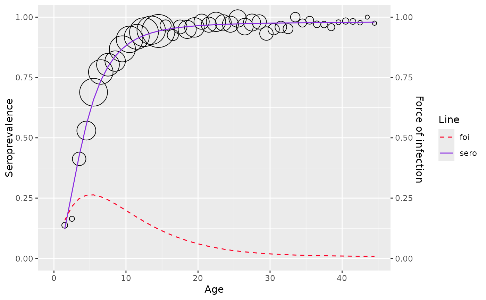

Refers to section 10.3
Usage
hierarchical_bayesian_model(
age,
pos = NULL,
tot = NULL,
status = NULL,
type = "far3",
chains = 1,
warmup = 1500,
iter = 5000
)Arguments
- age
the age vector
- pos
the positive count vector (optional if status is provided).
- tot
the total count vector (optional if status is provided).
- status
the serostatus vector (optional if pos & tot are provided).
- type
type of model ("far2", "far3" or "log_logistic")
- chains
number of Markov chains
- warmup
number of warmup runs
- iter
number of iterations
Value
a list of class hierarchical_bayesian_model with 6 items
- datatype
type of datatype used for model fitting (aggregated or linelisting)
- df
the dataframe used for fitting the model
- type
type of bayesian model far2, far3 or log_logistic
- info
parameters for the fitted model
- sp
seroprevalence
- foi
force of infection
Examples
# \donttest{
df <- mumps_uk_1986_1987
model <- hierarchical_bayesian_model(age = df$age, pos = df$pos, tot = df$tot, type="far3")
#>
#> SAMPLING FOR MODEL 'fra_3' NOW (CHAIN 1).
#> Chain 1: Rejecting initial value:
#> Chain 1: Log probability evaluates to log(0), i.e. negative infinity.
#> Chain 1: Stan can't start sampling from this initial value.
#> Chain 1: Rejecting initial value:
#> Chain 1: Log probability evaluates to log(0), i.e. negative infinity.
#> Chain 1: Stan can't start sampling from this initial value.
#> Chain 1: Rejecting initial value:
#> Chain 1: Log probability evaluates to log(0), i.e. negative infinity.
#> Chain 1: Stan can't start sampling from this initial value.
#> Chain 1: Rejecting initial value:
#> Chain 1: Log probability evaluates to log(0), i.e. negative infinity.
#> Chain 1: Stan can't start sampling from this initial value.
#> Chain 1:
#> Chain 1: Gradient evaluation took 4e-05 seconds
#> Chain 1: 1000 transitions using 10 leapfrog steps per transition would take 0.4 seconds.
#> Chain 1: Adjust your expectations accordingly!
#> Chain 1:
#> Chain 1:
#> Chain 1: Iteration: 1 / 5000 [ 0%] (Warmup)
#> Chain 1: Iteration: 500 / 5000 [ 10%] (Warmup)
#> Chain 1: Iteration: 1000 / 5000 [ 20%] (Warmup)
#> Chain 1: Iteration: 1500 / 5000 [ 30%] (Warmup)
#> Chain 1: Iteration: 1501 / 5000 [ 30%] (Sampling)
#> Chain 1: Iteration: 2000 / 5000 [ 40%] (Sampling)
#> Chain 1: Iteration: 2500 / 5000 [ 50%] (Sampling)
#> Chain 1: Iteration: 3000 / 5000 [ 60%] (Sampling)
#> Chain 1: Iteration: 3500 / 5000 [ 70%] (Sampling)
#> Chain 1: Iteration: 4000 / 5000 [ 80%] (Sampling)
#> Chain 1: Iteration: 4500 / 5000 [ 90%] (Sampling)
#> Chain 1: Iteration: 5000 / 5000 [100%] (Sampling)
#> Chain 1:
#> Chain 1: Elapsed Time: 6.269 seconds (Warm-up)
#> Chain 1: 7.67 seconds (Sampling)
#> Chain 1: 13.939 seconds (Total)
#> Chain 1:
#> Warning: There were 1040 divergent transitions after warmup. See
#> https://mc-stan.org/misc/warnings.html#divergent-transitions-after-warmup
#> to find out why this is a problem and how to eliminate them.
#> Warning: Examine the pairs() plot to diagnose sampling problems
#> Warning: The largest R-hat is 1.06, indicating chains have not mixed.
#> Running the chains for more iterations may help. See
#> https://mc-stan.org/misc/warnings.html#r-hat
#> Warning: Bulk Effective Samples Size (ESS) is too low, indicating posterior means and medians may be unreliable.
#> Running the chains for more iterations may help. See
#> https://mc-stan.org/misc/warnings.html#bulk-ess
#> Warning: Tail Effective Samples Size (ESS) is too low, indicating posterior variances and tail quantiles may be unreliable.
#> Running the chains for more iterations may help. See
#> https://mc-stan.org/misc/warnings.html#tail-ess
model$info
#> mean se_mean sd 2.5%
#> alpha1 1.396964e-01 6.282853e-04 5.923867e-03 1.266570e-01
#> alpha2 1.984530e-01 6.531226e-04 7.471229e-03 1.816876e-01
#> alpha3 8.134999e-03 4.984843e-04 6.238997e-03 3.288423e-04
#> tau_alpha1 1.837260e+00 9.118501e-01 3.453448e+00 3.011680e-06
#> tau_alpha2 1.088102e+00 4.497676e-01 2.234367e+00 1.398866e-06
#> tau_alpha3 5.760057e-01 1.528733e-01 1.488414e+00 2.388198e-06
#> mu_alpha1 7.366598e+00 7.318110e+00 4.554164e+01 -8.437093e+01
#> mu_alpha2 4.251609e+00 3.616388e+00 3.974698e+01 -6.783642e+01
#> mu_alpha3 1.024298e+01 3.929716e+00 4.022601e+01 -5.661534e+01
#> sigma_alpha1 1.012779e+02 2.921157e+01 4.369818e+02 2.917867e-01
#> sigma_alpha2 1.264230e+02 6.267671e+01 9.763045e+02 3.414677e-01
#> sigma_alpha3 9.011484e+01 3.156637e+01 2.004557e+02 4.110592e-01
#> lp__ -2.534038e+03 1.029641e+00 4.581942e+00 -2.542405e+03
#> 25% 50% 75% 97.5% n_eff
#> alpha1 1.361116e-01 1.394422e-01 1.434924e-01 1.520839e-01 88.89900
#> alpha2 1.942609e-01 1.974856e-01 2.035505e-01 2.144510e-01 130.85630
#> alpha3 3.717696e-03 6.565381e-03 1.228261e-02 2.337679e-02 156.64863
#> tau_alpha1 4.510533e-04 2.468228e-02 1.326235e+00 1.174543e+01 14.34362
#> tau_alpha2 1.688744e-03 1.087815e-01 8.184582e-01 8.576315e+00 24.67928
#> tau_alpha3 4.549859e-04 1.535631e-02 1.715717e-01 5.918222e+00 94.79480
#> mu_alpha1 -1.576213e+00 3.315409e-01 5.265257e+00 1.309043e+02 38.72750
#> mu_alpha2 -1.193115e+00 3.479769e-01 2.531919e+00 1.418983e+02 120.79761
#> mu_alpha3 -1.412513e+00 5.869927e-01 1.793904e+01 1.043612e+02 104.78318
#> sigma_alpha1 8.683453e-01 6.365132e+00 4.708539e+01 5.762408e+02 223.77784
#> sigma_alpha2 1.105355e+00 3.031956e+00 2.433426e+01 8.462798e+02 242.63761
#> sigma_alpha3 2.414222e+00 8.069727e+00 4.688149e+01 6.470903e+02 40.32623
#> lp__ -2.537671e+03 -2.534146e+03 -2.529837e+03 -2.526925e+03 19.80284
#> Rhat
#> alpha1 1.0087033
#> alpha2 1.0129566
#> alpha3 1.0015594
#> tau_alpha1 1.0024250
#> tau_alpha2 1.0303510
#> tau_alpha3 1.0029936
#> mu_alpha1 1.0545330
#> mu_alpha2 0.9997249
#> mu_alpha3 0.9998225
#> sigma_alpha1 1.0001196
#> sigma_alpha2 1.0014808
#> sigma_alpha3 1.0029683
#> lp__ 1.0026787
plot(model)
#> Warning: No shared levels found between `names(values)` of the manual scale and the
#> data's fill values.

# }